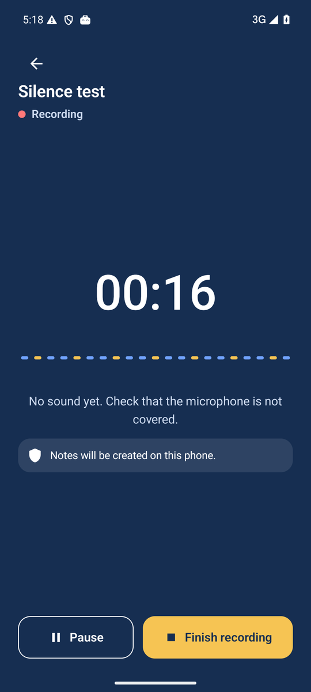
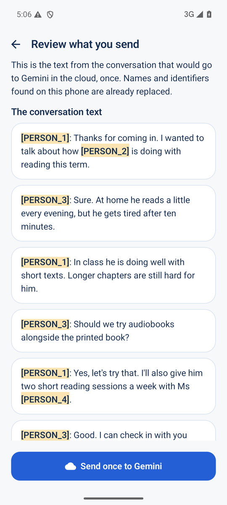

Meeting notes for teachers, where the conversation never has to leave the phone.
ContextFriend Pro records a parent–teacher conference or a support-plan meeting, turns speech into text, tells the speakers apart and writes notes you can check, all on the phone. Every point links to the moment it was said. The cloud is used only when you ask for it, and you see exactly what would be sent first.
Free APK for Android 12 or newer · no account · no ads · no tracking
Three steps, no setup maze
Install, tap "Get this phone ready" once on Wi-Fi, and everything after that works in airplane mode.
Record
Tell everyone it is recorded, tap record, put the phone on the table. The level bars and "Sound heard" show that it is listening.
Notes on the phone
Speech to text, speakers and notes run in the background on the phone, with a percentage. You can lock the screen or open another app.
Check and share
Each point has its sources in the transcript. Mark the notes as reviewed, then share them as text or as an encrypted link.
What it looks like


Hybrid, the other way round
Teachers in Germany may not paste conversations about children into a cloud chatbot. So here the device is the default, and the step to the cloud is deliberate, inspected and consented, one meeting at a time.
| Step | Where | How |
|---|---|---|
| Speech to text | On the phone | whisper.cpp, in 30-second windows; about 3–4× faster than real time on a Pixel 11 Pro |
| Who said what | On the phone | Speaker separation (pyannote, TitaNet) in one-minute windows |
| Notes | On the phone | Gemini Nano through Firebase AI Logic (ONLY_ON_DEVICE), or the ContextFriend engine (Gemma 4) on phones without Gemini Nano and for German and Hebrew |
| Better notes, if you ask | Cloud, on request | Gemini through Firebase AI Logic in the EU. Names are replaced on the phone first, you see the exact text, the answer is put back together on the phone. App Check (Play Integrity) protects the endpoint. |
Install
- Download ContextFriendPro.apk on the phone (checksums on the release page).
- Open it and allow your browser to install apps when Android asks.
- Start ContextFriend Pro, go through the three short welcome steps and tap Get this phone ready on Wi-Fi: 120 MB for speech and speakers.
- Record a conversation and watch the notes appear, with the percentage, in the list.
Needs Android 12 or newer. The cloud option needs a real phone (not an emulator) and the internet; everything else works offline.
Local AI on your phone
The notes come from Gemini Nano when your phone has it. The app's Local AI guide walks you through it:
- Recent flagship phones have Gemini Nano built in, for example the Pixel 9, 10 and 11 families.
- Update Android AICore in the Play Store.
- Pixel 10 and 11 (Gemini Nano 4): Developer options → AICore Settings → Enable AICore Developer Preview.
- Stay on Wi-Fi for a few minutes while Android downloads the model.
Private by design
Encrypted on the phone
Recordings, transcripts and notes are stored encrypted. Screenshots are blocked unless you allow them; an app lock is one switch away.
A log of every AI step
Privacy activity shows where each step ran (this phone or the cloud), which model and how many requests. Never what was said.
Open source
Apache-2.0. The policy that keeps meeting content on the phone is plain code with unit tests, in the repository.
Try it on your phone
Free, no account. Built by TamerinTECH GmbH for #BuildHybridAI 2026.